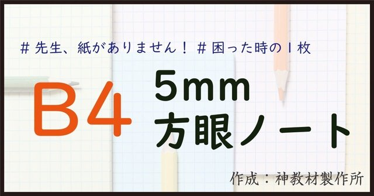
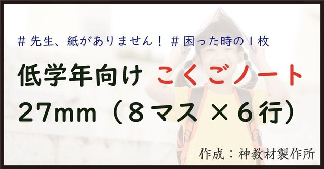
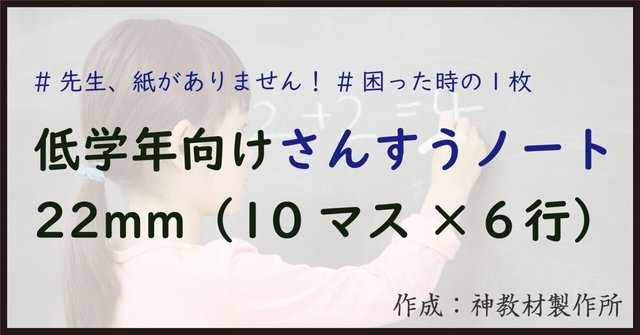
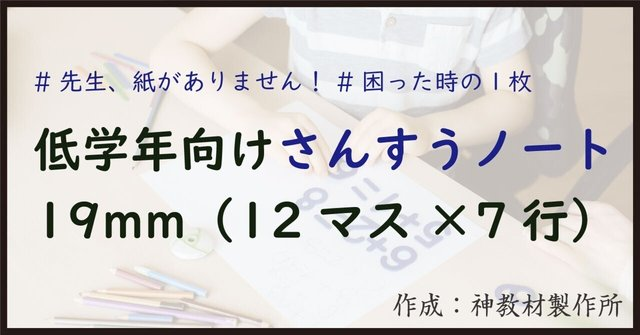
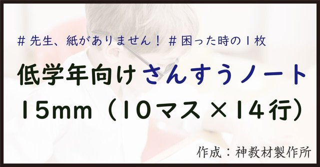
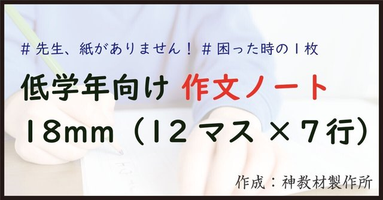
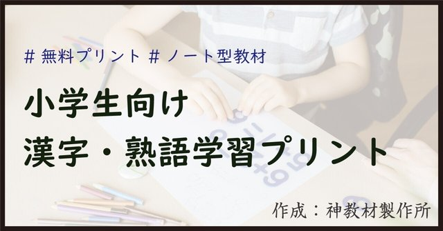

方眼・マス・作文。授業でよく使うノートを、そのまま印刷して配れる形にしました。ドリルの升目が合わない、書くスペースが足りない、そんなときの一枚に。全学年で使えて、ぜんぶ無料です。配布は note でしています。
カードをタップすると note の配布記事が開きます。

教科を選ばない方眼の一枚。図も表も計算も、これ一枚で受けとめます。
note で開く ↗
大きめのマスで、ひらがな・漢字の書き取りに。低・中学年の練習に。
note で開く ↗
筆算・図・表にちょうどいい升目。ゆったり書けるマス目のノート。
note で開く ↗
計算量が増える学年に。升目が多めで、一枚にたっぷり書けます。
note で開く ↗
数字を大きく書きたい低学年に。マスがはっきりして書きやすい形。
note で開く ↗
はじめての作文に。マス目つきで、文の書き方が自然に身につきます。
note で開く ↗
漢字と熟語をまとめて練習できるプリント。すきま時間の一枚に。
note で開く ↗配布ファイルは note の各記事内にあります。サムネイル画像は制作当時のもので、旧屋号「神教材製作所」の表記が残っているものがあります（現在のブランド名は School Stock です）。